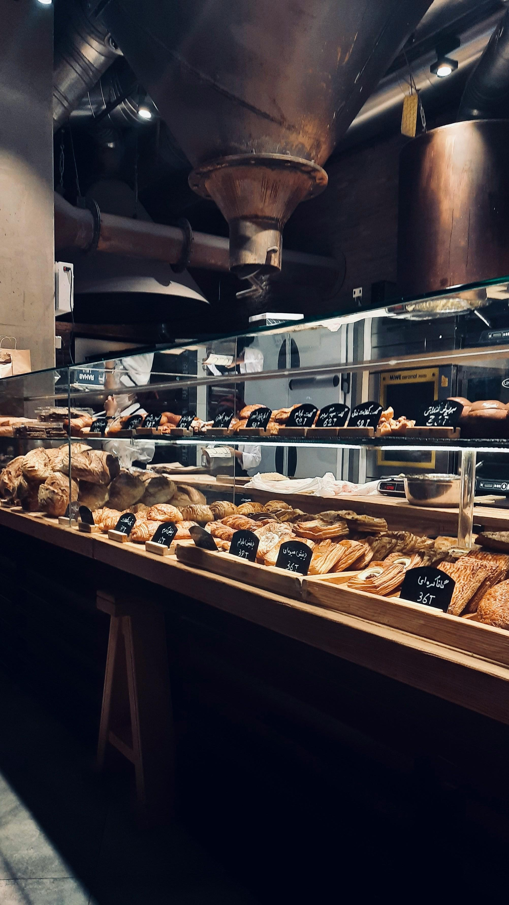
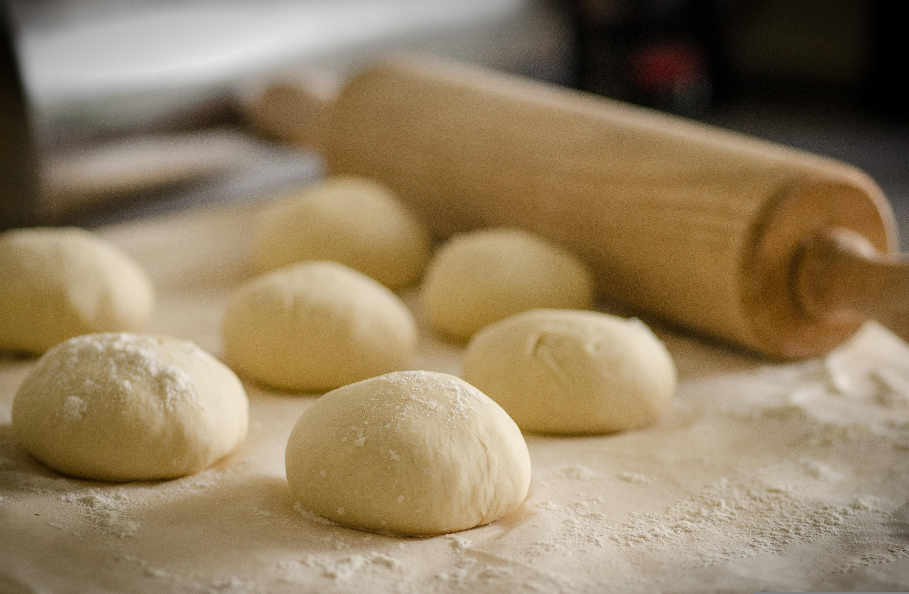

FRESH BREAD
BY IZA
BY IZA
Baked with love in Cape Town since 2020
Fresh Bread by Iza started from a small home kitchen. Iza believes in slow fermentation, honest ingredients and bread that brings people together.
Every loaf is hand-shaped and baked at 5am with organic flour, sea salt and water. No shortcuts.
• Slow fermented 24h • Organic flour • Baked daily


Interactive accordion - click to reveal answers